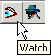
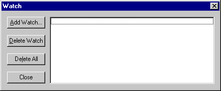
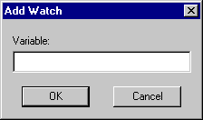
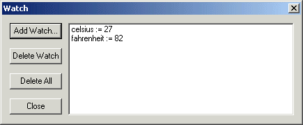
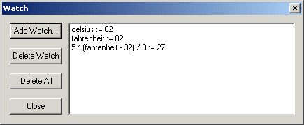

You can watch the values of variables while stepping through a program by opening Quincy's Watch Window and programming variables you want to watch.
To open the Watch window:

Any of these actions opens the Watch Window shown here.

To add a watch variable:
This action opens the Add Watch dialog shown here.

The variable name is added to the Watch Window's list. As you step through the program, the Watch Window displays the variable's current value as shown here.

You can enter an expression to watch, too. If the expression cannot be evaluated in the current scope of the program, the watch value displays as ??. Otherwise the value returned by the expression displays as shown here.If an expression has side effects, they come into play when the watch is evaluated each time you step through the program or when breakpoints occur.

To delete a watch variable from the Watch Window:
To close the Watch Window:
Closing the Watch Window does not delete any of the programmed watch variables.
You can reopen the Watch Window at any time as described in Opening the Watch Window or by choosing the Watch Window command on the View menu.